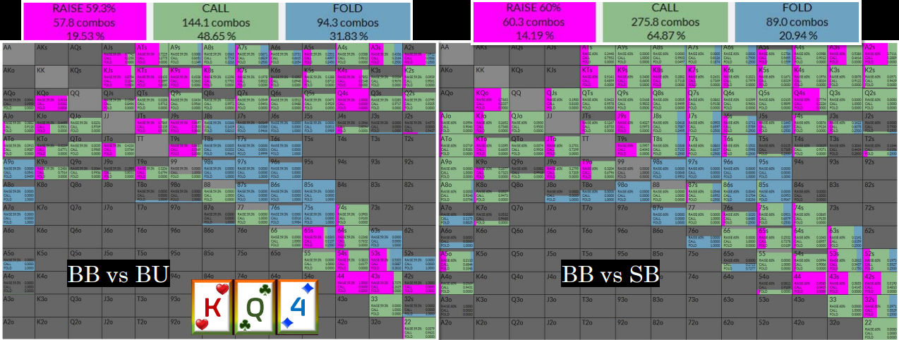

Whenever you face a bet there is a certain amount of EV expressed as a percentage of the new pot after you call that you will need to get in order to break even by calling. We will call this your Required Pot Share.
We can calculate what this by asking what % of the new pot (after you call) your investment will equate to.
But we can only estimate your actual pot share and whether you can hit required pot share or not by looking at the following factors:
Think of equity as the baseline for calling bets in open action spots (with more action remaining in the hand after you call). We need to adjust this for the other factors to make a best guess about our pot share.
And we need to remember that raising for value or as a semi-bluff might be a good idea even if we know that calling is +EV - meaning better than folding.
We shall start today's lesson with a very common spot - Facing Flop C-Bet and see how this thought process works, but first a word on position.
The following three factors are always better in position:
In position we have the ability to continue further into the hand due to being able to control whether bets go in or not on future streets to a greater extent and therefore our realizability, particularly with unmade hands, which need fold equity when they miss and implied odds when they hit is much better.
When we call a turn bet in position and Villain checks his air on the river we will have the chance to bluff with our worse air and win the pot. These spots are, moreover, favourable worlds and therefore bluffing is quite a bit better than 0EV.
When we call a turn bet in position we have the chance to value bet river and increase the pot against Villain's medium, strength hands, but when out of position the river will often go check-check here as we do not want to build a donking range in most cases.
If we call a flop bet in position we have the chance to value bet twice if Villain checks the turn. Contrast this t out of position where turn might go check-check and we only have the river left to value bet.
Position helps us pick and choose our future investments with more control and therefore boosts the EV of calling a bet on an earlier street but it is not the only thing that affects how positive our calling factors are likely to be.
Which option would you choose here as BB? Call or fold. Let's leave raising off the table for now.
We commit the “Don't Have The Odds” Fallacy when we only look at our equity and compare that to our target pot share. We must remember that target equity and target pot share are only the same thing in an end of action spot.
WRONG: We need 30% to call and we only have 9 diamonds + 3 kings to hit = 24%.
CORRECT: We have close to our required pot share just in equity then we have implied odds and the chance of winning with K-high.
PIO wants to call and EV is ~14% of the pot.
Hands that rely on winning with very marginal showdown value and that lack redraw to powerful hands are going to struggle to realise equity by having to fold at some point more frequently.
Hands that combine SDV with improvability or have outs to nutted hands are going to have higher realizability by being able to continue further into the hand.
When we're in position all of our pot share factors are going to be a lot more positive.
Have a look at the following two sims both run on the same flop:
A large part of why we are allowed to call flop c-bets with flimsy hands such as backdoors and gutters comes down to future fold equity. In theory, when we call a BU c-bet from BB, we know that there is a sizable frequency of the time that our opponent does not bet the turn.
When we call this flop c-bet, we expect to see a check on the turn around 60% of the time on average depending on the tun card.
When this happens, our range will be much stronger than Villain's because we have shed our worst hands and he has bet many of them and decided not to barrel a second time on this occasion.
Therefore, on the river we will have a big range advantage on most run outs. When this is the case our fold equity, in theory, should be above our break even point for a bluff whatever sizing we pick.
Therefore, getting the chance to make these profitable river bluffs is a big part of what allows us to call the flop and lose money the times Villain barrels the turn.
WARNING: But don't get too carried away here. We still need some implied odds and equity to call the flop bet. The future fold equity alone is not sufficient alone.